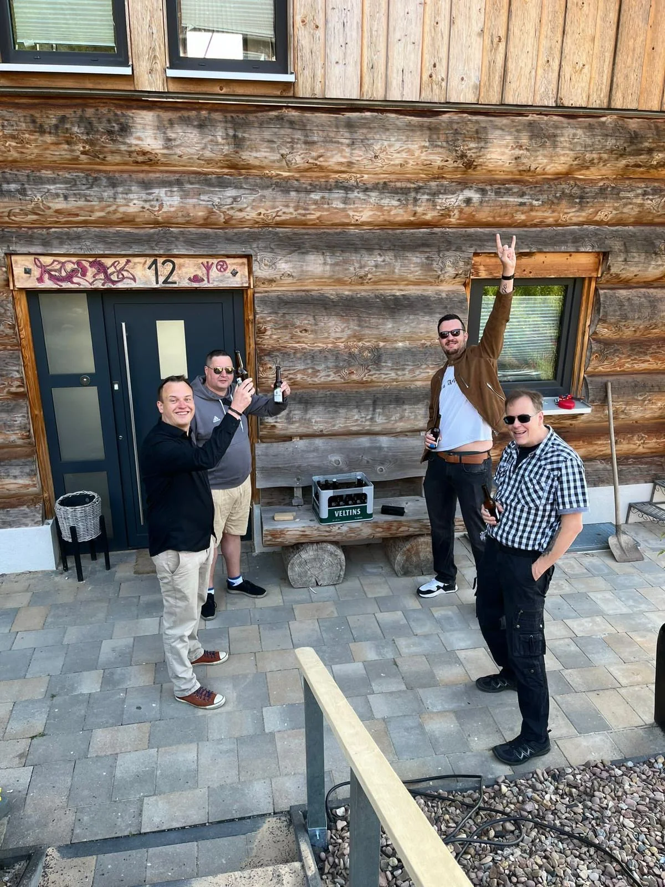
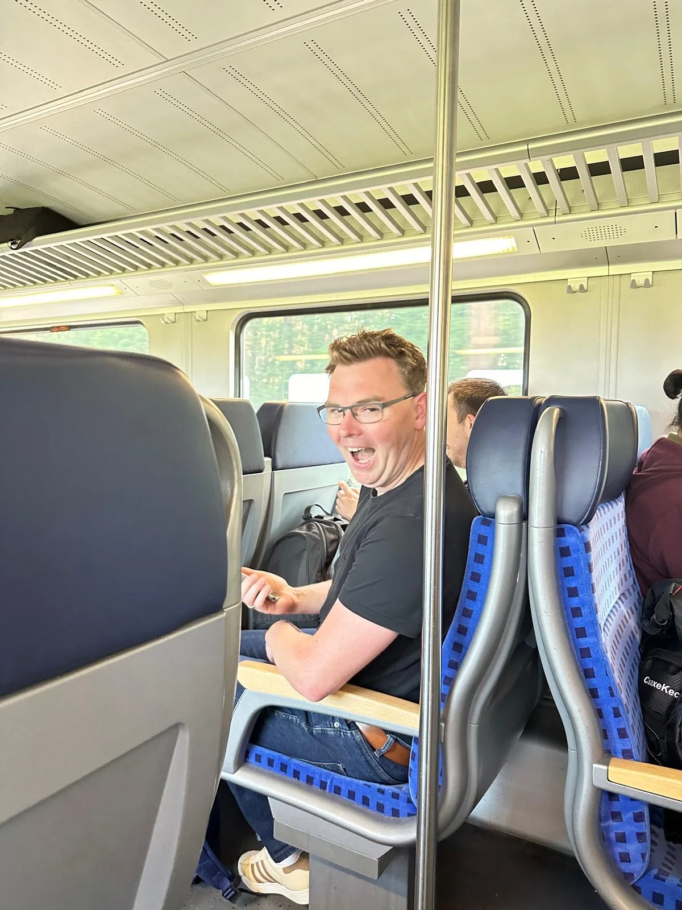
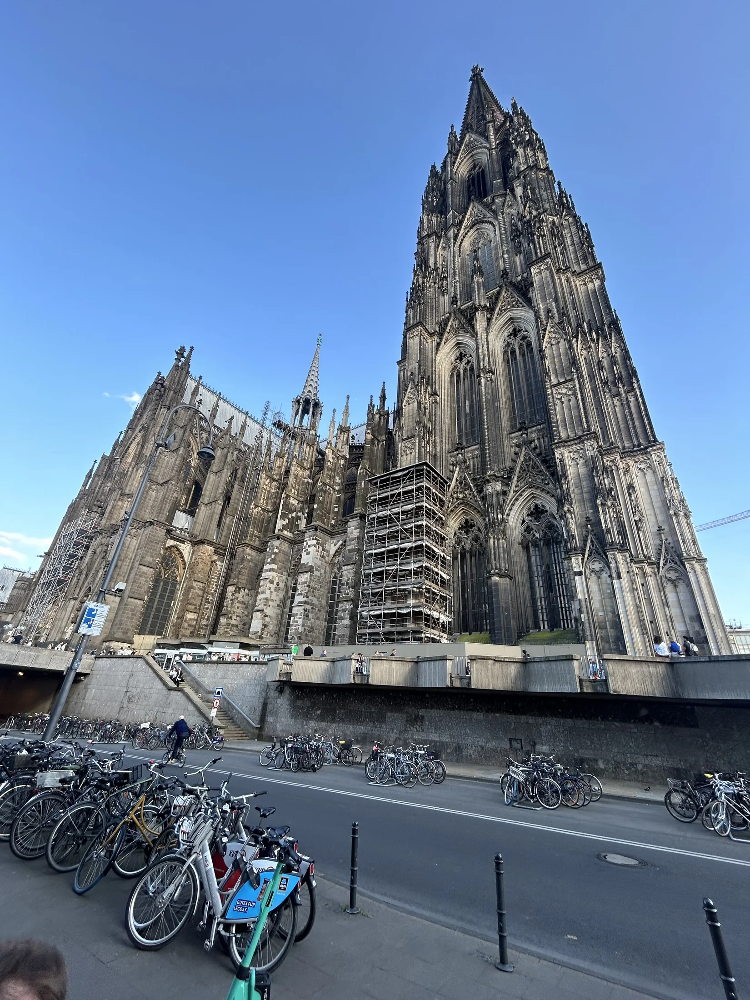
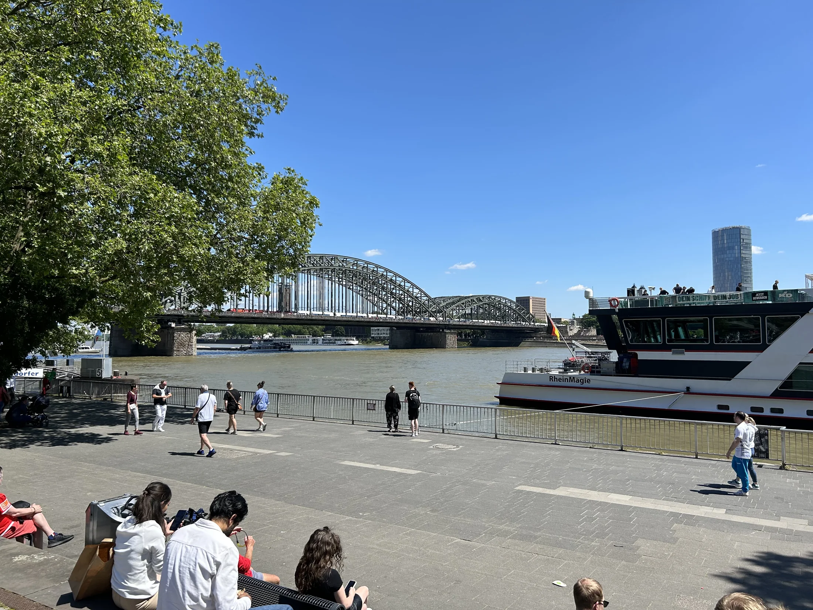
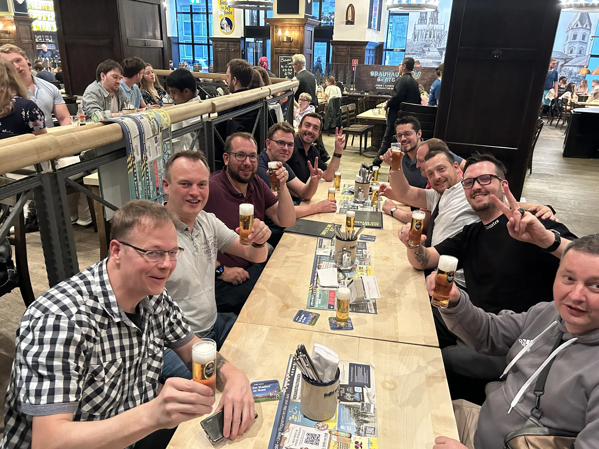
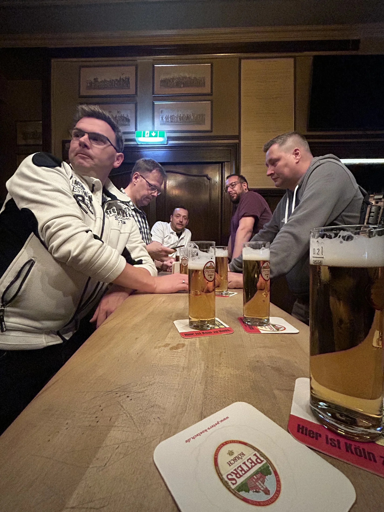
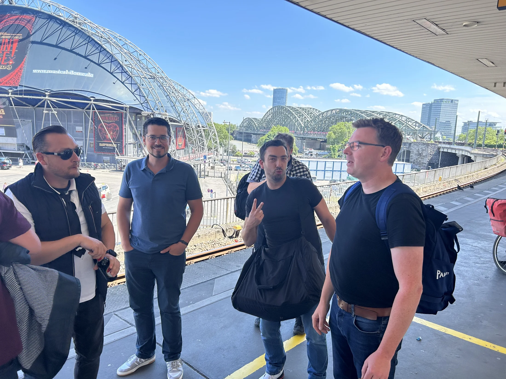

Reisebericht
Herrentour Köln 2024

Im Juni 2024 waren wir als Herrentour in Köln unterwegs – mit guter Laune, Zeit für die Stadt und den typischen Kölner Abend im Brauhaus. Dieser Bericht hält die schönsten Momente unserer gemeinsamen Fahrt fest.
Anreise
Früh am Morgen ging es Richtung Domstadt. Schon auf der Fahrt stimmte sich die Gruppe ein – aus Wölpinghausen kamen die Bierkartographen zusammen und freuten sich auf zwei Tage Köln.


Köln entdecken
Unterwegs in der Stadt lohnten sich Spaziergänge, erste Eindrücke und der Blick auf den Kölner Dom. Köln empfing uns mit der gewohnt lebendigen Mischung aus Tradition, Rheinromantik und urbanem Trubel.


Brauhaus
Ein Highlight war natürlich das Brauhaus: Kölsch, rustikale Holztische und ausgiebiges Beisammensein. Hier wurde gelacht, angestoßen und der Tag ausklingen lassen – ganz im Sinne unseres Mottoes „Gemeinsam unterwegs. Gemeinsam am Tresen.“


Gemeinsam unterwegs
Ob an der Theke, auf der Straße oder zwischendurch bei einer Pause – entscheidend war die Zeit miteinander. Genau dafür fahren wir als Verein los: um Gemeinschaft zu leben und Erinnerungen zu schaffen, die lange bleiben.


Heimreise
Mit vielen Eindrücken im Gepäck ging es zurück nach Wölpinghausen. Der Dom blieb als letztes Bild in Erinnerung – und die Vorfreude auf die nächste Tour war schon spürbar.
Fotogalerie
Galerie wird geladen …